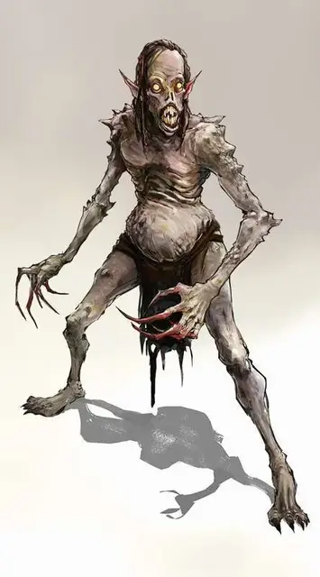

Маурежи
Maurezhi
Среднее Исчадие (Демон), обычно хаотично-злое

Класс Доспеха 15 (природный доспех)
Хиты 88 (16к8 + 16)
Скорость 30 футов
| мод | спас | ||
|---|---|---|---|
| СИЛ | 14 | +2 | +2 |
| ЛОВ | 17 | +3 | +3 |
| ТЕЛ | 12 | +1 | +1 |
| мод | спас | ||
|---|---|---|---|
| ИНТ | 11 | +0 | +0 |
| МДР | 12 | +1 | +1 |
| ХАР | 15 | +2 | +2 |
Навыки Обман +5
Сопротивление урону некротическая энергия, огонь, холод, электричество; дробящий, колющий, рубящий от немагических атак
Иммунитет к урону яд
Иммунитет к состояниям отравление, очарование, истощение
Чувства тёмное зрение 120 футов, пассивное Восприятие 11
Языки Бездны, Эльфийский, Телепатия 120 фт.
Опасность 7 (2900 опыта)
Бонус мастерства +3
Среда обитания Болото, Город
Особенности
Принятие формы. Маурежи может принимать форму любого гуманоида Среднего размера, которого он съел. Демон остаётся в этой форме на протяжении 1к6 дней, во время которых принятая форма постепенно разлагается до тех пор, пока не будет полностью сброшена с тела демона.
Сопротивление магии. Маурежи совершает с преимуществом спасброски от заклинаний и прочих магических эффектов.
Действия
Мультиатака. Маурежи совершает одну атаку Укусом и одну атаку Когтями.
Укус. . Рукопашная атака оружием: +6 к попаданию, досягаемость 5 фт., одна цель. Попадание: 14 (2к10 + 3) колющего урона. Если цель гуманоид, то показатель её Харизмы уменьшается на 1к4. Понижение характеристики заканчивается, когда цель заканчивает короткий или продолжительный отдых. Цель умирает, если значение Харизмы опускается до 0. После этого она восстаёт через 24 часа в виде упыря [ghoul], если она не была воскрешена или её труп не был уничтожен.
Когти. . Рукопашная атака оружием: +6 к попаданию, досягаемость 5 фт., одна цель. Попадание: 12 (2к8 + 3) рубящего урона. Если целью является существо, отличное от нежити, оно должно преуспеть в спасброске Телосложения Сл 12, или стать парализованной на 1 минуту. Цель может повторять спасбросок в конце каждого своего хода, оканчивая на себе эффект в случае успеха.
Оживить упыря (перезарядка 5-6). Маурежи выбирает целью одного мёртвого упыря [ghoul] или вурдалака [ghast]. Цель восстаёт с полными хитами.
Описание
Когда Доресэйн, Король Упырей, развратил общество эльфов, он породил новый вид демона, который возглавит стаи упырей и вурдалаков на Материальном плане.
Когда маурежи поглощает труп убитого им гуманоида (процесс занимает 10 минут), то он немедленно приобретает внешность существа, что была при его жизни. Новый облик начинает разлагаться в течение следующих нескольких дней, тем самым, раскрывая свой изначальный облик.
Маурежи – само олицетворение чумы. Их атаки укусом могут высосать самосознание жертвы. Если позволить ему высосать больше самосознания, то жертва заражается нечестивой жаждой к плоти, которая пересиливает личность жертвы и превращает её в упыря.